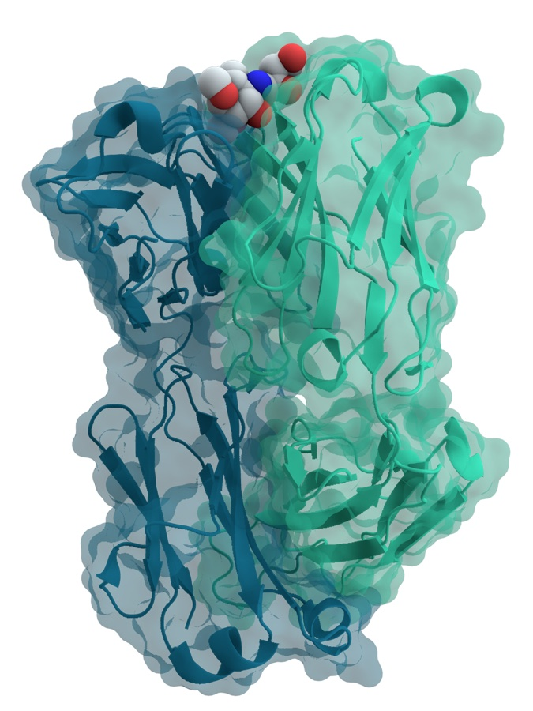

Executive Summary
Chai Discovery, a startup that designs antibodies with AI, raised a $400M Series C in July 2026. The round valued the company at $3.8 billion, roughly triple the $1.3 billion it commanded just seven months earlier. Pfizer, Eli Lilly, and Novartis all appear on its customer list. So where is that capital flowing, and where does the real moat in this field actually sit?
The detail worth studying is the structure of the Pfizer deal. Pfizer did not simply buy access to a shared, off-the-shelf model. It also licensed a private version retrained on its own proprietary data. Over the same stretch, generative AI drug discovery has absorbed a cumulative $20 billion, yet not a single drug it produced has cleared regulatory approval, while more than 173 AI-derived candidates have entered clinical trials. Design has gotten dramatically faster; the layer of data that would prove one of those molecules actually becomes a drug is still largely empty.
That gap is redrawing the asset map of the industry. What is scarce is not the foundation model but decades of experimental data and clinical deployment history. The structure of the Pfizer deal spells that fact out, clause by clause.
$400M
Chai Discovery Series C
$3.8B valuation, ~$630M raised to date
×2.9
Valuation jump in 7 months
$1.3B (Dec 2025) → $3.8B (Jul 2026)
0
AI-discovered drugs approved
against $20B invested to date
173+
AI-derived candidates in trials
design surged, validation stalled
Triple the Valuation in Seven Months
Chai Discovery builds AI models that predict how biomolecules interact with one another. In December 2025 it raised $130 million in a Series B at a $1.3 billion valuation. Then on July 13, 2026, it pulled in $400 million in a Series C, and its valuation jumped to $3.8 billion. In a little over half a year the company's value roughly tripled, a 2.9x move, bringing its total raised to $630 million.
Index Ventures led the round, with Kleiner Perkins, Sequoia Capital, and Dimension as co-leads. Bain Capital Ventures, Battery Ventures, and Baillie Gifford came in as new investors, while existing backers Thrive Capital, OpenAI, and Menlo Ventures held their positions. CEO Joshua Meier, a former OpenAI researcher, framed the announcement around execution: AI drug discovery, he said, has moved from promise to deployment.
Investors did not re-price the company threefold in half a year on technical progress alone. The more decisive signal is the customer list. The fact that large pharmaceutical companies — Pfizer, Eli Lilly, Novartis — adopted the model under real contracts read as evidence that Chai had crossed the gap between lab demo and commercial deployment. So what, exactly, did they buy?
What Chai-3 Actually Sells
Chai Discovery's core product is a model called Chai-3. It predicts how biomolecules bind to each other — proteins and ligands, antibodies and antigens. In drug discovery, that prediction amounts to screening, inside a computer, which molecules will latch onto a target before anything touches a lab bench. What the company emphasized most in this announcement was its antibody design capability.

Chai says the model doubled its success rate over the previous generation and delivers a hit rate of roughly 35–40% on candidate molecules. In other words, out of many candidates it flags the ones that genuinely bind to the target at a high proportion. This is precisely the point where time and cost drop sharply in the design stage.
There is a caveat worth naming, though. What improved here is the design score inside a computer. Hit rate is a measure of computational performance, not evidence that the molecule becomes a safe and effective drug in a human body. Notably, the announcement disclosed no wet-lab validation data or clinical results. "Design got faster" and "it became a drug" sit on different layers, and that distinction is the key to reading the Chai Discovery deal.
What Pfizer Really Bought
The most revealing part of the announcement is the structure of the Pfizer deal. Pfizer did not just receive access to Chai-3. It also licensed a private model trained separately on its own accumulated proprietary data. Eli Lilly signed a customer agreement to accelerate biologics design, and Novartis entered a formal collaboration.
Unpack what Pfizer bought and it comes in two layers. One is the shared foundation model that anyone can access; the other is a dedicated model retrained solely on Pfizer's data, usable only by Pfizer. The first is an asset you rent; the second is an asset you lock up. The real weight of the deal sits on the second.
Competitors can rent the same model, but Pfizer's decades of experimental and clinical data exist only at Pfizer. So the moment even the same Chai-3 is retrained on Pfizer's data, it becomes an asset no one can replicate. The proposition Pebblous has long argued — rent the model, lock up the data — shows up here as an actual clause inside a biotech contract.
$20B In, Zero Approvals Out
Zoom out from one company's success to the industry as a whole, and the picture changes. Generative AI drug discovery has absorbed a cumulative $20 billion so far. Yet among the drugs discovered with that money, the number that have won approval from a regulator like the FDA is still zero. More than 173 AI-derived programs have entered clinical trials, but not one has crossed the finish line.
Line those numbers up and one fact becomes clear. Money and candidate molecules have exploded, but the rate at which they convert into actual drugs is not yet a value you can measure. AI has largely solved the design-stage bottleneck. The validation-stage bottleneck — proving "is this molecule really a safe and effective drug" — remains almost untouched.
Validation is slow because of the nature of the data. Design can lean on molecular and structural data that already exists and simply run the computation faster. The data validation needs, by contrast, has to be created anew, in real cells, animals, and human bodies, over time. That data does not speed up when you add more GPUs. So no matter how fast design gets, the evidence that a molecule became a drug still accumulates at the old pace.
Two Ways to Fill the Gap
Efforts to fill the validation-data gap are splitting into two opposite directions. Both start from the same problem: taking a brand-new molecule through trials from scratch costs too much time and data. But they route around it in opposite ways.
| Approach | Strategy | How it treats data |
|---|---|---|
| Pfizer-style (lock up the data) |
A large pharma turns its own data into a dedicated model | Locks up its proprietary experimental and clinical data to hold an edge |
| Repurposing-style (reuse the data) |
Find new indications for existing drugs, revive failed candidates | Reuses clinical data with safety already established to bypass the validation bottleneck |
The first is the path Pfizer demonstrated. It locks its own data inside a dedicated model, turning it into an asset no one else can replicate. In this structure, whoever holds the most data keeps pulling ahead.
The second comes from drug repurposing. A startup reportedly being prepared by former OpenAI researcher Miles Wang is said to be in talks to raise at a $2 billion valuation, with a focus on finding new uses for existing drugs and reviving failed clinical candidates. Rather than validating a new molecule from scratch, the idea is to reuse drugs for which human safety data has already accumulated. Instead of generating fresh validation data, it sidesteps the bottleneck entirely by reusing what already exists.
The directions are opposite, but the two strategies arrive at the same conclusion. What decides the race in this cycle is not model performance but access to validated data. One side handles the same bottleneck by locking data up; the other, by reusing it.
Rent the Model, Lock Up the Data
Reduce the Chai Discovery story to a single sentence and it reads like this: the model that designs well became a product quickly, but the data proving that design becomes a drug is still scarce and expensive. The valuation tripling in seven months and Pfizer separately licensing a dedicated model both point to the same fact: value gets assigned wherever the data is.
This pattern is not confined to biotech. The more common foundation models become, the more the defensible asset shifts to the proprietary data outside the model. You can rent a model on the market, but you cannot rent the validated data that a specific domain has built up over years. Biotech is simply the stage where that principle shows up most vividly, in the numbers $20 billion and zero approvals.
So the question to ask when looking at this field shifts too. Not "which company has the better model," but "who holds the validated data, and who fills the gap, and how." Pfizer-style locking and repurposing-style reuse are two different answers to that question.
Editor's Note
Pebblous has covered AI-Ready Data from the view that the defensible asset of the AI era is shifting from the model to the data. The Chai Discovery case is a vantage point that shows how that proposition takes concrete shape, as a clause, inside a biotech contract.
Pebblous Data Communication Team
July 17, 2026
References
- 1.Business Wire. (2026). "Chai Discovery Announces $400M Series C to Advance AI-Driven Molecular Design." Business Wire, Jul 13, 2026.
- 2.SiliconANGLE. (2026). "Chai Discovery nabs $400M Series C as AI-designed antibodies reach big pharma." SiliconANGLE, Jul 14, 2026.
- 3.TechCrunch. (2026). "OpenAI researcher Miles Wang in talks to launch AI drug discovery startup valued at $2B." TechCrunch, Jul 14, 2026.